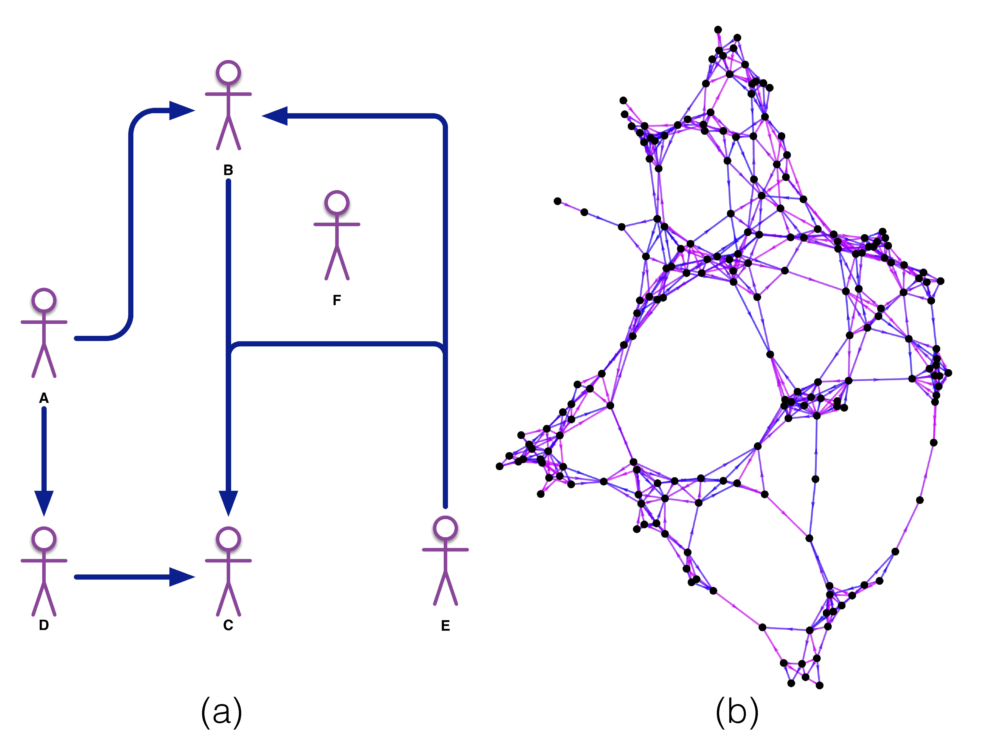

SoNA3BS: Social Network Aedes aegypti Agent-Based Simulation
Ph.D. thesis project
This simulation was created with the purpose of analysing mosquito-human interaction through a computational high-resolution agent based model coded in *NetLogo* capable of calculating the emerging vectorial-contact networks in the human population. As evidenced by current outbreaks of Zika, Chikungunya and Dengue our current understanding of the effectiveness of different mosquito-control interventions is scarce. Even worse is the fact that the impact of heterogeneity in spatial distribution and movement has not been studied thoroughly. Through this thesis project we developed a simulation to address some of these shortcomings. Network theory has been widely used in latest years to study direct-contact epidemic processes of diseases such as influenza. In the field of vector-borne diseases this has not been the case. Tracking both humans and mosquitos is a difficult task and approximating the relations between biting rates, flight range, human movement, weather and spatial distribution is a daunting task in field studies. By creating this simulation we want to provide a testbed in which we can explore the impact of different variables in the spread of mosquito borne diseases.

Thesis Abstract
Mosquitoes are responsible for transmitting pathogens that cause around $725,000$ human deaths per year. Unfortunately, understanding the factors that facilitate the spread of these diseases is complicated; as studying human-mosquito interactions in the field is a difficult task to undertake. Both mosquitoes and humans have their own set of biological requirements and behaviours, which quickly scales up the number of variables involved in these epidemiological processes. In this work, we present SoNA3BS (Social Networks *Aedes aegypti* Agent-Based Simulation); a computational model created to study the spatial relations of human-mosquito interactions in high-spatial resolution scenarios. This simulation is meant to provide framework to study how variables such as human movement, temperature and mosquito-control interventions affect the potential spread of diseases transmitted by the *Aedes aegypti* mosquito (such as Dengue, Zika and Chikungunya). Specifically, it allows us to study how humans connect to each other epidemiologically through mosquito bites with the use of tools borrowed from network theory analysis. Throughout this thesis document we will demonstrate the usefulness of this approach by making use of the simulation to analyse a realistic scenario mapped after a location near Catemaco, Veracruz (México); in which we analyse the effect of spatial distribution in the way humans connect to each other epidemiologically through mosquito bites both in presence and absence of mosquito-control interventions. We also provide a thorough description of the way biological processes were mapped into the model and a validation set of experiments in which we compare our system to an independent differential equations model; in which we show that the expected accuracy of our results is within reasonable limits of error.
Throughout this thesis document we will demonstrate the usefulness of this approach by making use of the simulation to analyse a realistic scenario mapped after a location near Catemaco, Veracruz (México); in which we analyse the effect of spatial distribution in the way humans connect to each other epidemiologically through mosquito bites both in presence and absence of mosquito-control interventions. We also provide a thorough description of the way biological processes were mapped into the model and a validation set of experiments in which we compare our system to an independent differential equations model; in which we show that the expected accuracy of our results is within reasonable limits of error.
 With these descriptions and experiments we wish to show the way epidemiological analysis and control could benefit from tools more traditionally associated with computer sciences than health disciplines; so that, in the future, we can use them to further our understanding of the way mosquito-borne diseases spread in human populations and how we can make the best use of our available resources in our efforts to bring epidemics to a halt.
With these descriptions and experiments we wish to show the way epidemiological analysis and control could benefit from tools more traditionally associated with computer sciences than health disciplines; so that, in the future, we can use them to further our understanding of the way mosquito-borne diseases spread in human populations and how we can make the best use of our available resources in our efforts to bring epidemics to a halt.

Results
With this project we were able to create an individual-based model that simulated human-mosquito interactions, we then compared its predictions in a population-dynamics level with an independent mathematical model, and finally we recreated the vector-contact networks to perform epidemiological analysis of spatially-heterogeneous scenarios in the presence of vector-control interventions. For a thorough description of the simulation and the experiments performed please refer to the published thesis document.